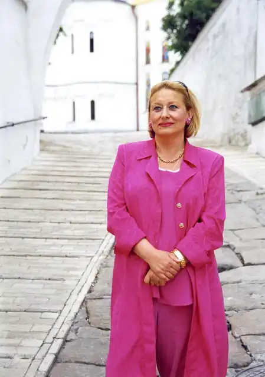

Людмила Скирда народилась 15 вересня 1945 року у місті Кіровоград в родині службовців. З 1950 року її родина проживає в Києві, де у 1968 році Людмила закінчила філологічний факультет Київського державного університету ім. Тараса Шевченка.
Перші вірші поетеси були опубліковані в газеті "Літературна Україна" і в журналі "Дніпро" у 1962 році. Вони були передруковані українською діаспорою в Канаді, США та Польщі. Після виходу першої книги "Чекання" у 1965 році, почали з'являтись захопливі відгуки в іноземній пресі та жорстка критика у радянській.
У 1968 році Людмила Скирда вступила до аспірантури Київського державного університету. У 1974 році вона захистила кандидатську дисертацію, присвячену творчості репресованого поета Євгена Плужника і почала працювати доцентом кафедри історії української літератури в КДУ. З 1986 по 1988 Людмила Скирда перебуває у докторантурі, де завершує роботу над докторською дисертацією, присвяченою українській поемі. З 1988 року Людмила Скирда вирушає до Відня, де її чоловік – український дипломат Юрій Костенко — обіймає посаду Постійного представника України при міжнародних організаціях, а згодом стає першим Надзвичайним і Повноважним Послом незалежної України в Австрійській Республіці. Невдовзі з'являються її книги віршів німецькою мовою "День Душі" (1994) та "Медитації біля Стефансдому"(1994). У 1994 році чоловіка Людмили Скирди Юрія Костенка призначено Надзвичайним і Повноважним Послом України у ФРН і вона переїздить до Бонну, де продовжує свою творчу діяльність. У Німеччині виходять її книги "Рейнські елегії" (1995), "В обіймах Югентстилю" (1996). З 1997 по 2000 рік поетеса живе і працює в Києві, де видає книги "Ad astra" та "Рожевий янгол або композиції за кермом". З 2001 року чоловіка Людмили Скирди Юрія Костенка було призначено Надзвичайним і Повноважним Послом України в Японії, куди поетеса переїздить і де живе і працює до 2006 року. За цей час вона видає книги японською мовою "Сад любові і сонця" (2004), "Чарівна мушля"(2004) та українською – " Дзуйхітцу від сакури "(2005), перекладає українською мовою книгу "Будувати мости" (2004) Її Величності Імператриці Японії Мітіко, читає лекції з української літератури в університеті Кіото та з гендерних проблем сучасності в університеті Sokko Gakai. У 2006 році Людмила Скирда повернулася на Батьківщину, де продовжувала плідно працювати. З 2006 по 2009 рік її книги мовами цих країн виходять у ОАЕ ("Сьоме небо"), Греції ("Еліністичні елегії"), Італії("Метелики і квіти"), Кореї("Сливовий дощ"),Росії ("Птахи і квіти чотирьох сезонів"). У 2009–2012 рр. — жила і працювала в КНР, разом з чоловіком Юрієм Костенко Надзвичайним і Повноважним Послом України у КНР. Надрукувала у Пекіні три поетичні книги китайською мовою "Подих Китаю", "Мелодії чотирьох сезонів", "Голоси Піднебесної", а також унікальний альбом "Натхненний вірш, чаруюча картина", в якому 25 найвідоміших художників Китая проілюстрували вірші української поетеси. Після повернення з Китаю Людмила Скирда видає "Бібліографію творчості", книги віршів "Сто сонетів", "Amor & Море" (іспанською мовою), "О, Ямато", "Сакура гуллари" (узбецькою мовою – друге видання), "О, Європо", "Solo of the sunny soul" (англійською мовою – друге видання). У Мюнхені вийшов художній альбом "Натхнення два крила" (2017) разом з молодою художницею Олесею Костюк. У 2016 році виходить монографія "Стою на своїй землі. Борис Олійник. Лірична та епічна творчість" (у співавторстві з професором Наталією Костенко). Цього ж року виходить монографія професора Михайла Наєнка "Поетична карма Людмили Скирди". Ім‘я Людмили Скирди є одним з небагатьох українських літературних імен, вже широко відомих закордоном. Її поезія ввібрала в себе вплив і європейських, і східних культур, що призвело до появи абсолютно унікального поетичного явища не тільки в контексті української літератури, але й літератур цілого світу. Книги Людмили Скирди перекладено англійською, італійською, японською, корейською, китайською, арабською, грецькою, узбецькою, іспанською, французькою та німецькою мовами. Окремі вірші перекладались польською, фінською, португальською, угорською та румунською мовами. Людмила Скирда була першою письменницею Незалежної України, перекладеною в Японії, Китаї, КНДР, ОАЕ, Греції та інших країнах.